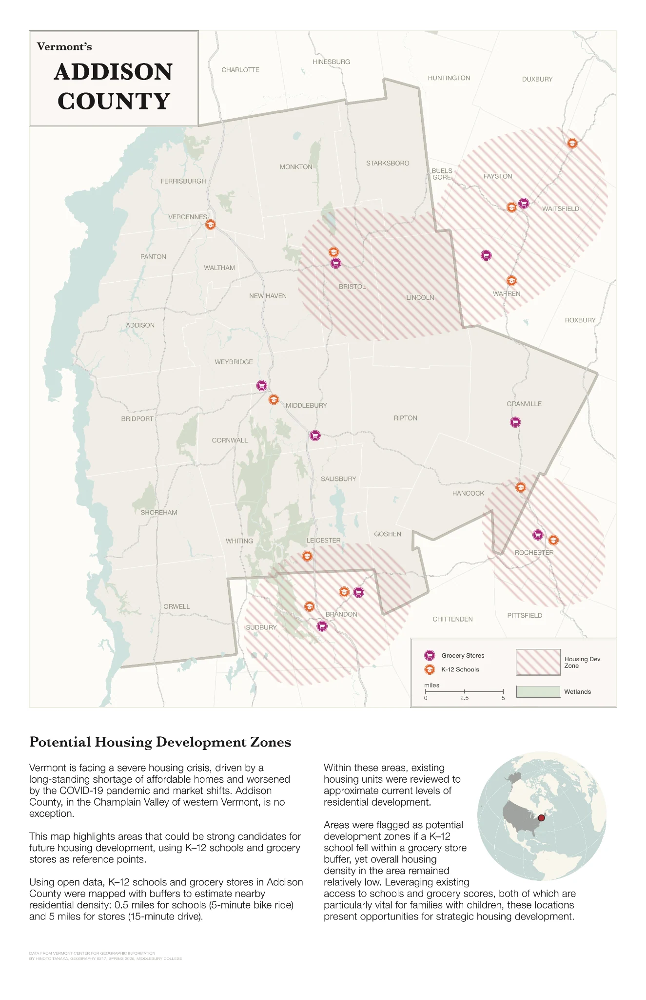

Mapping Housing Potential
Where might new housing make sense in Addison County, Vermont?

At a glance
- Year
- 2026
- Tools
- QGIS
- Data
- Existing residential land, K–12 schools, grocery stores, wetlands
- Output
- A county suitability map
- Skills
- Suitability screening, buffer analysis, overlay, map design
Vermont needs housing, and a family needs more than a lot. I screened Addison County for land that is already residential, close to a school and within reach of groceries.
How it was made
Behind the map
01
Three filters
A place qualified if it was existing residential land, within half a mile of a K–12 school, and within five miles of a grocery store. Where all three overlap, the map hatches it pink. Hatching keeps the land underneath readable.
02
A starting point, not a plan
Wetlands and other features stay on the map so the constraints are visible next to the candidates. The result is a place to start the conversation, not a list of places that should be built on.